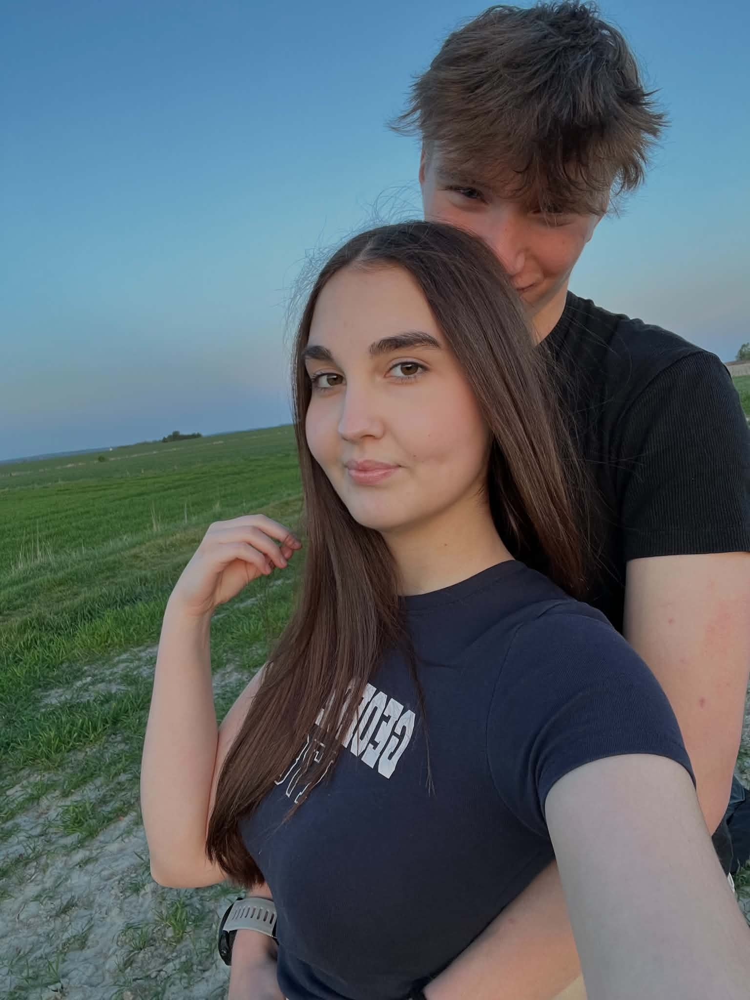
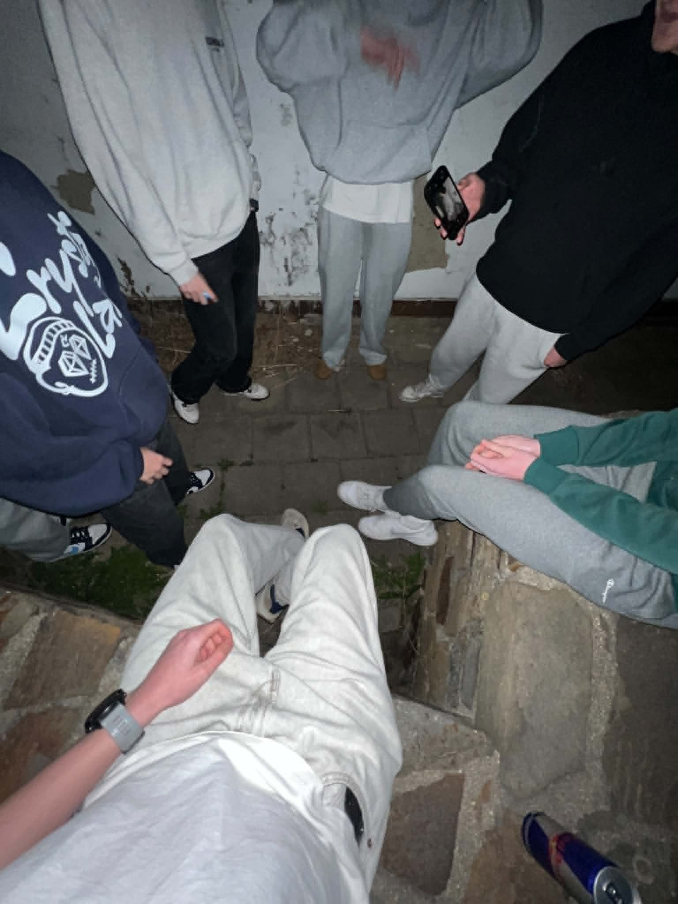
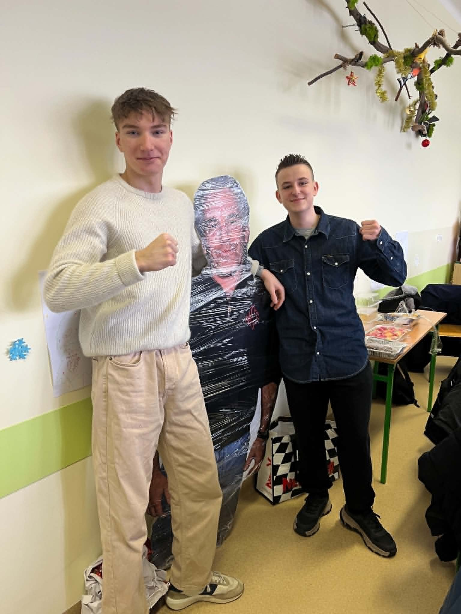
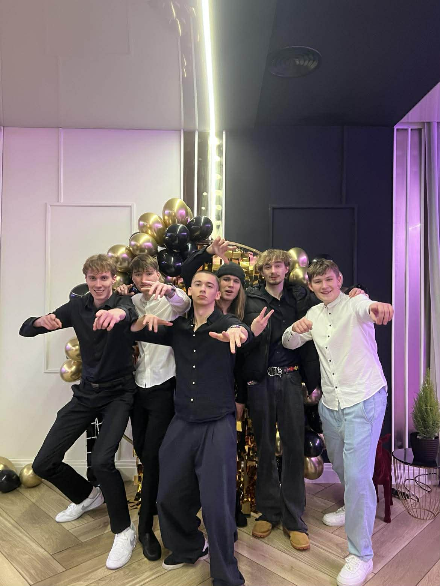
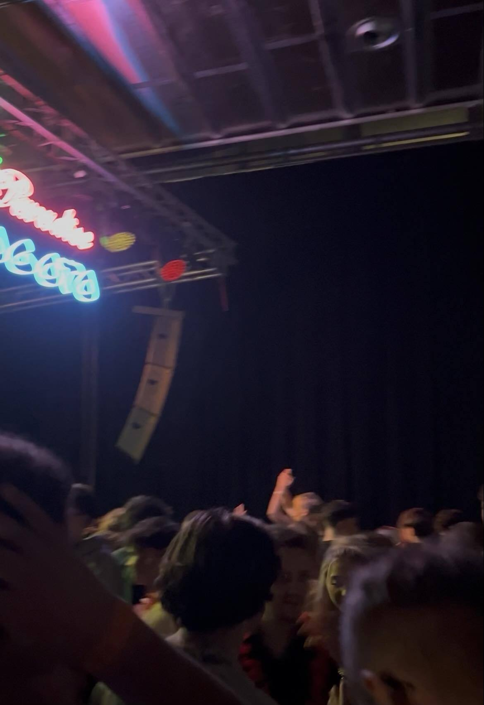
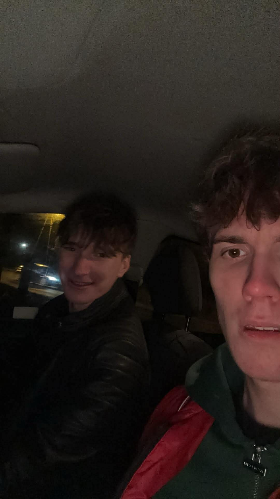
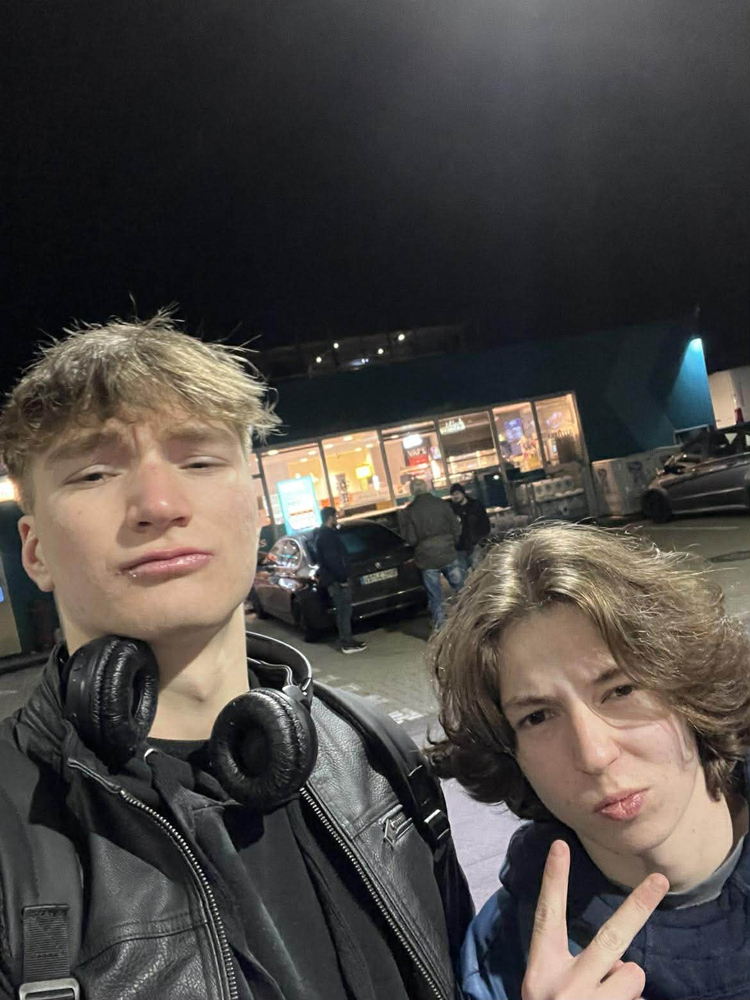

Osoby z którymi spędzam czas
Kiedyś byłem mocnym introwertykiem, ale to się zmieniło z czasem kiedy zacząłem poznawać w moim życiu osoby, które są po jakimś czasie dla mnie bardzo bliskie. Od paru lat niesamowicie cieszę się z nowych relacji, które zawiązuje i dają mi poczucie spełnienia.







Bardzo cenię sobie relacje oparte na jedności, zaufaniu i więzi, którą potrafię wyczuć już od pierwszych momentów spędzonych z odpowiednią osobą. Ważne dla mnie są także pasje i cele danej osoby, by pomóc jej się realizować w tym co kocha robić.